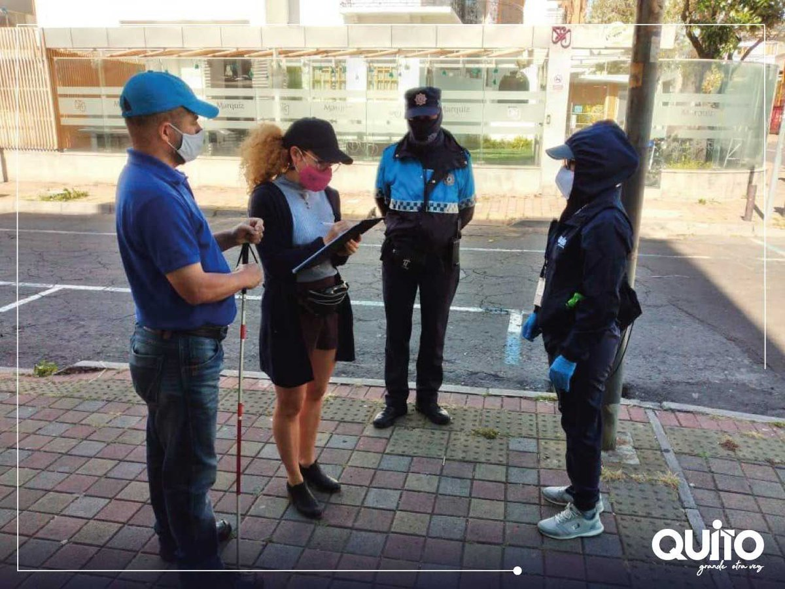
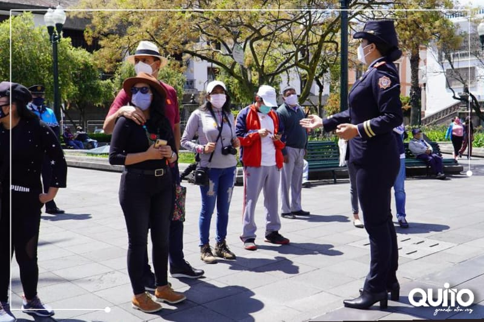
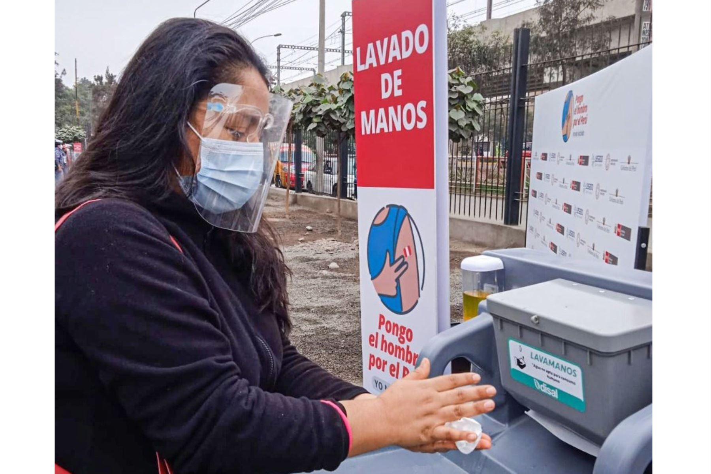
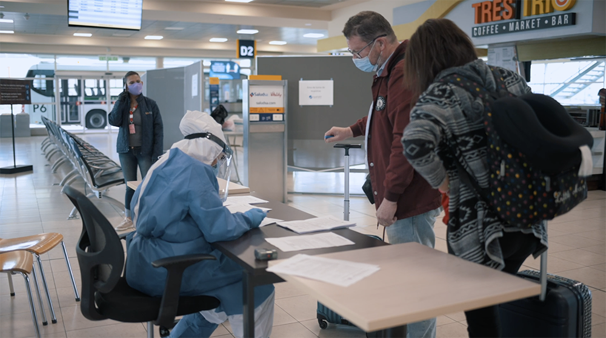

Protocolos de Bioseguridad para el turismo en Quito
Debido a la pandemia del COVID 19, el sector turismo se vio afectado con una gran cantidad de perdida de ingresos,asi que se vieron obligados a realizar una serie de cambios, actualmente se dispone de una gran cantidad de protocolos que se dispone para evitar contagios en el sector turistico de Quito.
Uso de Mascarillas
La mascarilla debe cubrir boca y nariz y se debe desechar una vez que esta mojada, sucia, depositándola en el recipiente dispuesto para el manejo de desechos, preferiblemente utilizar mascarillas tipo NK-95 y no mascarillas de tela. Cambiar la mascarilla.
Validar Distancia
Los guias de turismo deben procurar mantener el distanciamiento entre personas de un máximo de 2 metros, especialmente si estás no son del grupo del que se encuentra a cargo,evitar cualquier tipo de contacto durante todo el trayecto del viaje.
Higiene de manos
Aumento de la frecuencia de lavado de manos con una duración mínima de cuarenta (40) segundos en cada lavada, y desinfección de las mismas con alcohol o alcohol gel al 70%, hacer esto cada hora luego de cada descanso propuesto por el guia turistico, una ves hecho el lavado de manos correctamente, secar con toalla limpia.
PCR Negativo
Los pasajeros que viajen por turismo, deben presentar una prueba PCR para COVID-19 con resultado negativo, realizada hasta 96 horas previas al ingreso a la provincia de Quito, todo pasajero que no esta con prueba PCR negativo, no podra realizar las actividades establecidas y permanecera en cuarenta por 15 días en el hotel más cercano.
Encuesta de protocolos para viaje seguro
Tu seguridad es importante para nosotros,por eso decidimos crear este formulario en el cual podemos validar si usted cumple con los protocolos necesarios para acceder a nuestro viaje.Tu salud es importante para cuidarnos entre todos.
Realizar Encuesta Facebook
Facebook
 Instagram
Instagram
 Twitter
Twitter